Identity Management en J2EE: SAML
Identity Management
La proliferación de aplicaciones web obliga al usuario a crear nuevas cuentas en diferentes sitios web por lo que se ven obligados a mantener un buen número de identidades digitales (normalmente usuario y password). Adicionalmente cada sitio gestiona de forma diferente la información de identidad, dependiendo de la implementación o de la infraestructura de seguridad de que disponga. Esto supone un grave problema en escenarios tipo B2B en cadena, no solo para los usuarios, que deben fichar (sing on) en cada sistema getionado por las entidades/socios de negocio sino para los propios sistemas de gestión puesto que, p.e. cada cambio de password debe propagarse. Todo sería más fácil si se dispusiese de una identidad única, esto es si se fichase una sola vez (Single Sing-On (SSO)) y en esa dirección va J2EE. Hay tres conceptos clave:
Identidad de red: solución software que incorpora procesos de negocio en red y la tecnología necesaria para gestionar tanto el ciclo de vida de las identidades como las relaciones entre estas y las aplicaciones.
El concepto de identidad federada se refiere al uso inter-dependiente de información de identidad entre compañías y aplicaciones o bien a través de diversas infraestructuras en Internet, y el SSO es una de sus funcionalidades. Extiende por tanto el concepto de identidad de red dentro de una compañía a múltiples empresas e infraestructuras de seguridad. Esto incluiria, p.e. implementar cómo las identidades se registran, son revocadas o desaparecen del proveedor de identidad.
La gestión de identidad es el proceso de manejar identidad de red e identidad federada. Entre sus funcionalidades más destacadas están: la administración de las identidades, el mapeo de éstas a usuarios o grupos, la provisión de cuentas en diferentes sistemas (incluyendo la sincronización de passwords y la aplicación de políticas de seguridad sobre ellos), la administración delegada(local o distribuída), el tracking (auditing) del ciclo de vida de la identidad, y finalmente el SSO y el Global log-out.
A nivel industrial OASIS ha publicado una serie de estándares que soportan identidad federada. Uno de ellos es SAML: Security Assertion Markup Language SAML que es el que estudiaremos en esta sesión (especialmente su implementación en servidores de aplicaciones). Otra iniciativa industrial muy conocida es la Liberty Alliance http://www.projectliberty.org que involucra a más de 150 empresas, organizaciones sin ánimo de lucro y gubernamentales. En lo que respecta al SSO, es la respuesta en sistemas abiertos a la iniciativa Passport de Microsoft.
Introdución a SAML
Motivación de SAML a partir de casos prácticos
Para motivar el uso de SAML, vamos a tener en cuenta tres posibles escenarios:
1. Sigle Sign-On (SSO): Un analista que ha hecho login en el sitio PepitoCO tiene acceso directo a la información que hay en el sitio JuanitoCO de la misma compañía CO.
2. Transacción Distribuída: Los empleados de PepitoCO pueden hacer pedidos directamente de OficinaOF si tienen suficiente presupuesto para el pedido.
3. Servicios de autorización: Los empleados de PepitoCO hacen pedidos directamente a OficinaOF quien se encarga de pedir autorización.
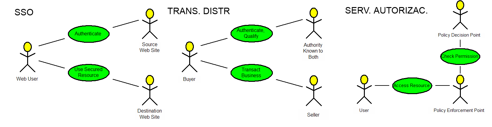
Para implementar estos escenarios adecuadamente se necesita lo siguiente:
Formato XLM estándar: Son solo datos navegando por el cable. Se dispone de un amplio espectro de herramientas para manejar XML.
Protocolo estándar de intercambio de mensajes: Debe especificarse claramente cómo se pide y se obtiene la información que uno necesita.
Reglas de interoperatividad: Sobre como los mensajes se mueven sobre y los protocolos de transporte.
SAML es un framework basado en XML para el intercambio de información de seguridad:
1. Se basa en afirmaciones/asertos (assertions) codificadas en XML.
2. Usa un protocolo de intercambio de petición/respuestas.
3. Se basa en reglas para usar assertions con protocolos estándar y frameworks de mensajes también estándar.
La primera especificación de SAML fue la 1.0 (Nov. 2002), pero el servidor BEA-Weblogic 9.2 implementa la 1.1 (Sept. 2003) dando soporte a la identidad de red. La última especificación aprobada por OASIS es la 2.0 (Marzo 2005). Lo bueno de SAML es que es una iniciativa que al surgir de OASIS garantiza la implicación de usuarios y empresas.
Arquitectura de SAML
Modelo Concentual de SAML
La especificación original SAML se introdujo usando un modelo de dominio que consiste en los siguientes elementos clave: Credential Collector, Authentication Authority, Session Authority, Attribute Authority y Policy Decision Point.
| Credential Collector | Objeto del sistema que recoge las credenciales del usuario para autentificarlas con las Authentication Authority, Attribute Authority y Policy Decision Point. |
| Authentication Authority | Entidad del sistema que produce asertos de autentificación. |
| Session Authority | Entidad del sistema (p.e. un proveedor de identidad) que mantiene el estado de la sesión. |
| Attribute Authority | Entidad del sistema que produce asertos de atributo. |
| Attribute Repository | Repositorio donde se almacenan los asertos de atributo. |
| Policy Repository (Policy) | Repositorio donde se almancenan las políticas. |
| Policy Decision Point | Entidad del sistema toma decisiones de autorización para sí misma o para otras entidades del sistema que requieren autorización. |
| Policy Enforcement Point | Entidad del sistema que aplica las políticas de seguridad para conceder o revocar el acceso al peticionario de recursos. |
| Policy Administration Point | Entidad del Sistema en donde se definen y mantienen las políticas (p.e. reglas de control de acceso para un determinado recurso). |
Para ver como funcionan estos elementos en el dominio supongamos que una determinada entidad del sistema (cliente) pretende enviar una petición de aplicación para acceder a un determinado recurso. Para ello presenta sus credenciales (p.e. usuario y password) al Credentials Collector quien procederá a la autentificación a través de la Authentication Authority correspondiente (que genera un aserto de autentificación), la Attribute Authority (que generaría un aserto de atributo) y el Policy Decision Point (aserto de autentificación) antes de que se conceda al cliente acceso (decisión basada en una política) al recurso deseado. El Policy Enforcement Point procesará la petición de la aplicación de acuerdo con los derechos de acceso garantizados por la política.
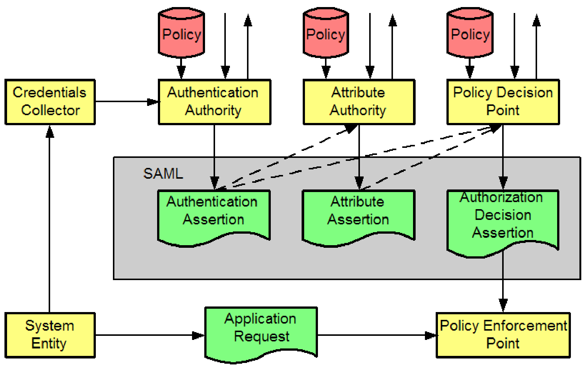
Este es un modelo conceptual de producción-consumo de asertos. En la práctica, múltiples tipos de autoridades pueden estar en el mismo sistema (SAML permite, pero no exige, la federación total de todos estos elementos). Además, las flechas no reflejan el flujo real de información: el orden de los asertos no es significativo, la información puede ser depositada o extraida, no todos los asertos se producen siempre, y no todos los clientes potenciales se muestran en el modelo.
Arquitectura Lógica de SAML
Los arquitectos y desarrolladores deben mapear este modelo a una arquitectura lógica y eso va a depender del escenario. Veamos primero de una forma general cómo se hace esto para dos de los escenarios comentados arriba y después entraremos en detalles.
En primer lugar veamos como se mapea para el caso SSO:
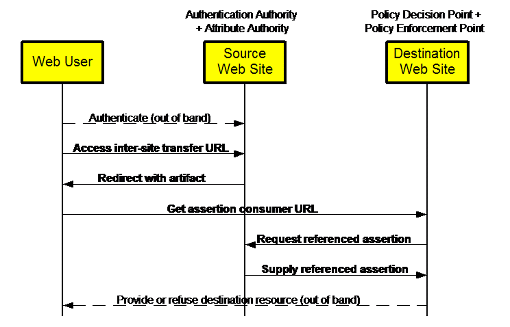
1. El cliente pasa, p.e. a través del navegador, sus credenciales para autorizarse al Source Site. Es decir, se conecta a http://pepitoco.com.
2. Una vez autorizado clickea en http://juanitoco.com que es a donde desea ir (Destination Site).
3. Ese click le llevará realmente a una URL de transferencia entre sitios web: https://source.com/intersite?dest=juanitoco.com.
4. La redirección se realiza a través de un artefacto SAML que no es más que un string de 8 bytes codificado en base 64.
5. El usuario es redireccionado a la URL https://juanitoco.com?SAMLart=<artifact> (incluyendo el artefacto), la URL del consumidor de asertos o Destination Site.
6. Después el sitio de destino pide un aserto al sitio fuente y éste le responde con el aserto correspondiente.
7. A partir de este punto el cliente es aceptado o revocado por el sitio de destino.
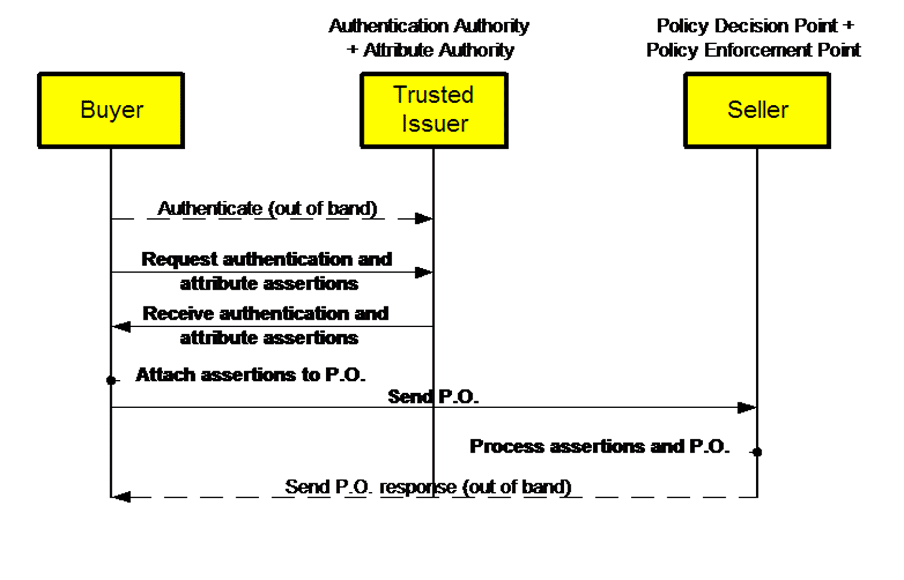
Veamos ahora cómo se mapea para el caso de transacción distribuída
1. El cliente (comprador) se autentifica ante un sitio web: Trusted Issuer.
2. Después le pide asertos de autentificación y de atributo.
3. Recibidos dichos asertos los incorpora a un P.O. y los envía directamente al sitio vendedor Seller. Usualmente el vendedor es conocido por el comprador pero no al contrario. Sería deseable que el comprador se autentificase con certificados.
4. Es en el Seller donde se procesan los asertos y el P.O.
5. Finalmente el comprador recibe la respuesta en el P.0. (con el resultado de la compra).
Asertos (Assertions) SAML
Para entender mejor este proceso hay que entender cómo funcionan los asertos, que son los elementos fundamentales producidos por cada autoridad SAML teniendo en cuenta bien la acción de autentificación realizada sobre un sujeto (p.e. un peticionario de servicio), información de atributos acerca del sujeto o una petición de autorización (p.e. si el peticionario puede acceder al recurso). Los asertos son tres tipos de declaraciones acerca de un sujeto (humano o programa):
| Authentication Assertion | Un aserto que contiene datos de negocio acerca de la autentificación exitosa de un sujeto (p.e. un peticionario de servicio) |
| Authorization Decision Assertion | Aserto que contiene datos de negocio acerca de una decisión de autorización (ésta podría indicar p.e. que al sujeto se le permite acceder al recurso solicitado). |
| Attribute Assertion | Aserto que contiene datos de negocio acerca de los atributos de un objeto. |
SAML permite extender los tipos de asertos y declaraciones. Además pueden firmarse digitalmente.
Cualquier tipo de aserto tiene los siguientes elementos comuntes:
| AssertionID | Identificador único del aserto |
| Issuer | Emisor del aserto. |
| IssueInstant | Timestamp indicando el momento en el que se realiza la emisión. |
| Subject | Nombre (Name) y dominio de seguridad (SecurityDomain). Puede incluir información de confirmación (p.e. clave pública) llamada SubjectConfirmationData y método de confirmación (password, sender-vouches...) llamado ConfirmationMethod. |
| Conditions | Condiciones bajo las cuales el aserto es válido (los clientes SAML deben rechazar asertos cuando no se cumpla alguna de estas condiciones. Ejemplos: NotBefore, NotOnOrAfter, AudienceRestrictionConditions (p.e. una URI concreta) |
| Advice | Consejos, p.e. explicando cómo se hizo el aserto. |
Un aserto con estos elementos es el siguiente
Y la estructura lógica de los asertos es:
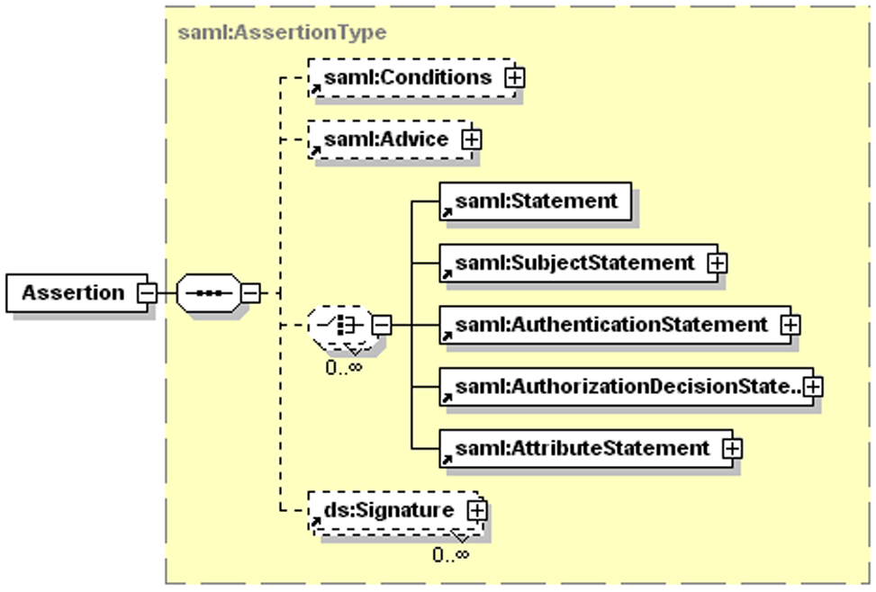
Un aserto con estos elementos es el siguiente
<saml:Assertion
MajorVersion="1" MinorVersion="0"
AssertionID="128.9.167.32.12345678"
Issuer="Pepito Corporation"
IssueInstant="2001-12-03T10:02:00Z">
<saml:Conditions
NotBefore="2001-12-03T10:00:00Z"
NotOnOrAfter="2001-12-03T10:05:00Z">
<saml:AudienceRestrictionCondition>
<saml:Audience>
URI
</saml:Audience>
</saml:AudienceRestrictionCondition>
</saml:Conditions>
<saml:Advice>
...varios elementos...
</saml:Advice>
...las declaraciones (statements)...
</saml:Assertion>
Declaraciones (Statements)
En cuanto a las declaraciones o Statements, es precisamente lo que se afirma acerca del sujeto (subject).
Los AuthenticationStatement especifican que la autoridad emisora asserta que el sujeto S se autentificó mediante M en el tiempo T. Sin embargo, la comprobación o revocación de las credenciales queda fuera del ámbito de SAML. Simplemente se establece un enlace con procesos de autentificación que ya deben haberse realizado. Los elementos clave son: el Authentication Method, el AuthenticationInstant, el Subject y el ConfirmationMethod.
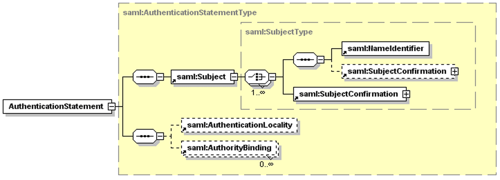
Y un ejemplo es el siguiente:
<saml:Assertion ...>
...
<saml:AuthenticationStatement
AuthenticationMethod="password"
AuthenticationInstant="2001-12-03T10:02:00Z">
<saml:Subject>
<saml:NameIdentifier
SecurityDomain="pepitoco.com"
Name="juanuser"/>
<saml:ConfirmationMethod>
http://
core-25/sender-vouches
</saml:ConfirmationMethod>
</saml:Subject>
</saml:AuthenticationStatement>
</saml:Assertion>
Un AttributeStatement pecifica que la autoridad emisora indica que el sujeto S está asociado con los atributos A, B,... con valores "a", "b",... Esto resulta útil para transacciones (items) y servicios de autorización. Usualmente estos datos se recogen del LDAP: p.e., para el caso de una autorización podríamos extraer del LDAP que "juan.perez" en "pepitoco.com" está asociado con "Departamento" con valor "Recursos Humanos". Estos atributos pueden referirse también a roles. Lógicamente, los elementos más importantes de este statement son: Attribute, AttributeName, AttributeNamespace y AttributeValue.
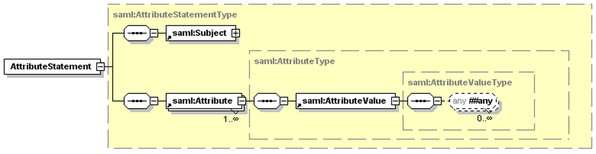
Por ejemplo:
<saml:Assertion ...>
<saml:AttributeStatement>
<saml:Subject>...</saml:Subject>
<saml:Attribute
AttributeName="EstadoPago"
AttributeNamespace="http://pepitoco.com">
<saml:AttributeValue>
Pagado
</saml:AttributeValue>
</saml:Attribute>
<saml:Attribute
AttributeName="LimiteCredito"
AttributeNamespace="http://pepitoco.com">
<saml:AttributeValue>
<my:amount moneda="USD">500.00</my:amount>
</saml:AttributeValue>
</saml:Attribute>
</saml:AttributeStatement>
</saml:Assertion>
Finalmente, la AuthorizationStatement especifica si la autoridad emisora decide garantizar o no al sujeto S un acceso de tipo A al recurso R (página o servicio web) dada la evidencia E. La respuesta viene en Response y puede ser "Permit", "Deny" o "Indeterminate". Se incluyen usualmente las acciones Action y las evidencias Evidence en las que la autoridad se ha basado para tomar la decisión
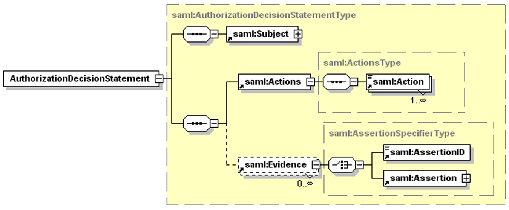
Por ejemplo:
<saml:Assertion ...>
<saml:AuthorizationStatement
Decision="Permit"
Resource="http://juanitoco.com/rpt_12345.htm">
<saml:Subject>...</saml:Subject>
<saml:Actions
ActionNamespace="http://...core-25/rwedc">
<saml:Action>Read</saml:Action>
</saml:Actions>
</saml:AuthorizationStatement>
</saml:Assertion>
Protocolo de comunicación SAML
SAML usa un modelo request-reply para implementar la interacción entre la Relying Party que realiza peticiones de asertos y la SAML Authority o (Asserting Party) que emite asertos.
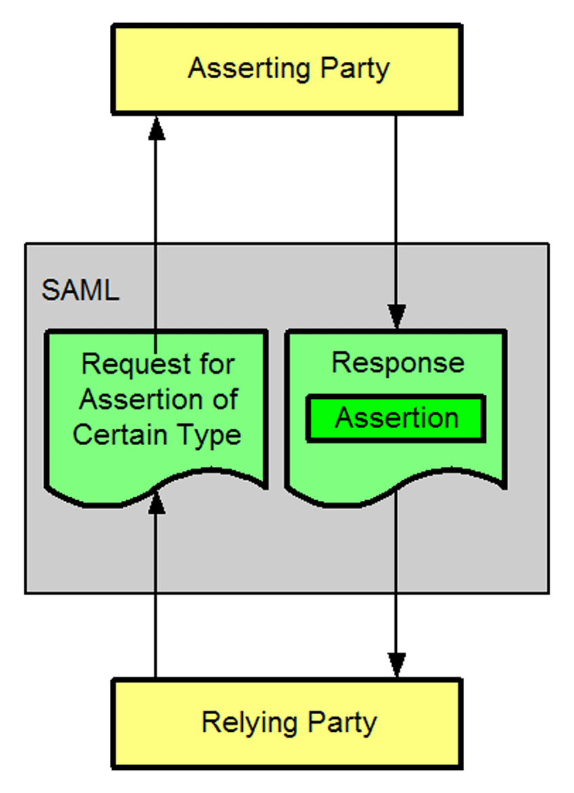
En SSO, la Asserting Party suele ser el sitio contra el que se autentifica el cliente y la Relying Party suele ser el sitio de destino. Repasemos un poco más en detalle como funciona todo esto:
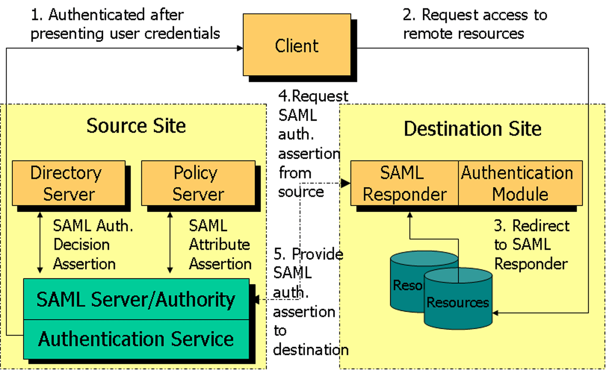
1. El cliente acaba de autentificarse presentando sus credenciales al sitio fuente y éste las ha aceptado después de consultar con su Authorization Service (posiblemente una consulta al LDAP o a cualquier tabla donde estén mapeados los passwords o certificados de cada usuario).
2. El cliente crea una Application Request a un recurso remoto en el sitio de destino.
3. El sitio de destino dispone de un SAML Responder que se apoya en un Authentication Module. Un ejemplo de módulo de autentificación es un módulo JAAS que accede al servidor local de ficheros. En el sitio de destino se intercepta la petición de recurso y es redirigida a un SAML Responder que actúa como Policy Enforcement Point, es decir, se asegura de que clientes no autorizados no puedan acceder a ciertos recursos. SAML no especifica como construirlos pero deben emitir una Authorization Request a la autoridad SAML.
4. El SAML Responder realiza una petición de aserto, en este caso de autentificación, al sitio fuente.
5. El SAML Authority procesa la petición de aserto de auntentificación y responde al sitio de destino. A partir de ese momento el sitio fuente sabe que el cliente ya esta autentificado y no le pide hacer login de nuevo. Después, el sitio de destino realizará peticiones de asertos de atributo y de autorización para comprobar si el cliente tiene realmente acceso a los recursos que está pidiendo.
Las peticiones de asertos y las respuestas están envueltas usando el protocolo SOAP (lo estudiareis en el módulo de Servicios Web).
En el cuerpo de un mensaje de petición (p.e. autentificación por password) se encapsulan las credenciales del usuario (p.e. el ID y el password si ya se conoce a través de JAAS, certificados... - para un futuro contraste) en un Security Token junto con una firma digital (usando firma XML - lo veremos más adelante) y el Requested Data (p.e. autentificación por password). Todo ello se encapsula en un envelope SOAP y se envía via HTTPS.
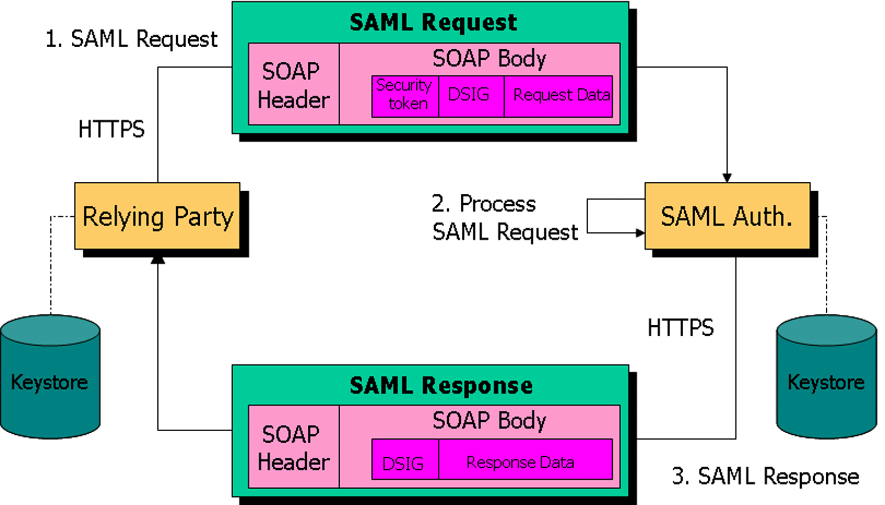
A nivel XML En el cuerpo del mensaje de una petición suele ir la propia petición <samlp:Request> que suele contener los elementos AuthenticationQuery, AttributeQuery o AuthorizationDecisionQuery según el caso. También suele generarse una firma digital <ds:Signature> y añadirse al mensaje SOAP.
Veamos la estructura y un ejemplo de AuthenticationQuery. Viene a ser algo así como Por favor suministre información para autentificación del sujeto S, si tienen alguna. Implícitamente se asume que entre el peticionario y el que responde hay una relación de confianza, hablan del mismo subject y la respuesta (que contendrá un aserto) es una carta de presentación para ese sujeto.
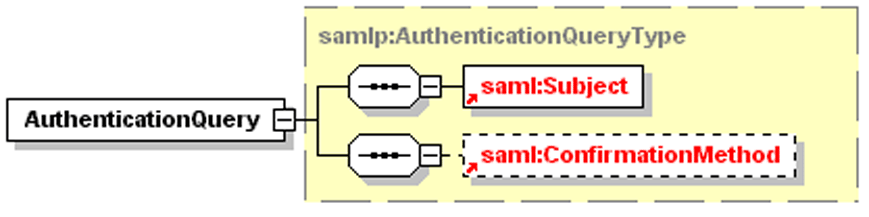
Veamos la estructura de una petición de este tipo.
<samlp:Request
MajorVersion="1" MinorVersion="0"
RequestID="128.14.234.20.12345678">
<samlp:AuthenticationQuery>
<saml:Subject>
<saml:NameIdentifier
SecurityDomain="pepitoco.com"
Name="juanuser" />
</saml:Subject>
</samlp:AuthenticationQuery>
</samlp:Request>
La AttributeQuery viene a ser algo así como por favor, deme información sobre los atributos del sujeto S que se listan a continuación. Si no se lista ninguno se entiende que pides información sobre todos los atributos. Si el peticionario no puede acceder a ciertos atributos solo los valores de aquellos a los que puede acceder se proveeran en la respuesta y esto se indica en el codigo de estado de la respuesta.
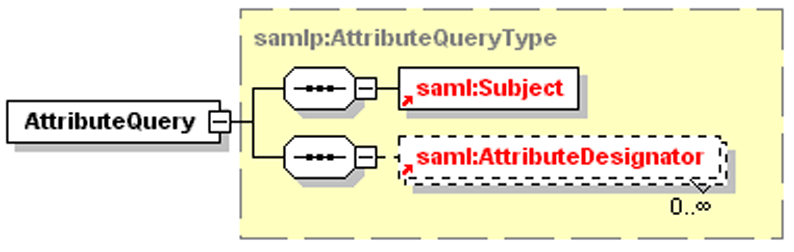
<samlp:Request ...>
<samlp:AttributeQuery>
<saml:Subject>
<saml:NameIdentifier
SecurityDomain="pepitoco.com"
Name="juanuser" />
</saml:Subject>
<saml:AttributeDesignator
AttributeName="EstadoPago"
AttributeNamespace="http://pepitoco.com">
</saml:AttributeDesignator>
</samlp:AttributeQuery>
</samlp:Request>
Una AuthorizationDecisionQuery viene a ser si: Puede este sujeto acceder al recurso especificado de la forma que se especifica y con la política que se especifica.Esta es una pregunta si-o-no. Se espera una respuesta concreta a una pregunta muy delimitada.
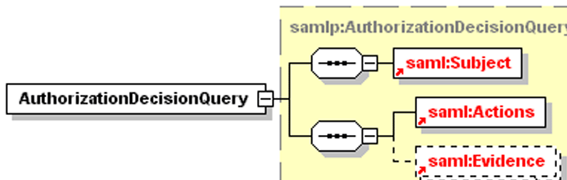
<samlp:Request ...>
<samlp:AuthorizationQuery
Resource="http://juanitoco.com/rpt_12345.htm">
<saml:Subject>
<saml:NameIdentifier
SecurityDomain="smithco.com"
Name="juanuser" />
</saml:Subject>
<saml:Actions
ActionNamespace="http://
core-25/rwedc">
<saml:Action>Read</saml:Action>
</saml:Actions>
<saml:Evidence>
<saml:Assertion>...</saml:Assertion>
</saml:Evidence>
</samlp:AuthorizationQuery>
</samlp:Request>
En cuanto a las respuestas, ya se ha dicho que contienen asertos, y por tanto declaraciones, pero además contienen un estado o <Status>. Si algo falla no se devuelven asertos sino el estado. Los códigos de estado más frecuentes son: Success, VersionMismatch, Receiver y Sender. Se espera que las respuestas estén firmadas digitalmente. Su forma general es:
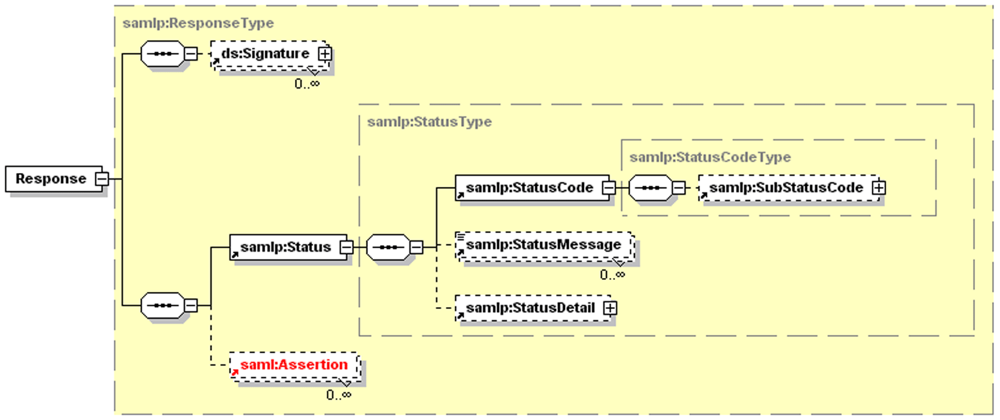
Finalmente, un ejemplo de respuesta:
<samlp:Response
MajorVersion="1" MinorVersion="0"
RequestID="128.14.234.20.90123456"
InResponseTo="128.14.234.20.12345678"
StatusCode="Success">
<saml:Assertion
MajorVersion="1" MinorVersion="0"
AssertionID="128.9.167.32.12345678"
Issuer="Pepito Corporation">
<saml:Conditions
NotBefore="2001-12-03T10:00:00Z"
NotAfter="2001-12-03T10:05:00Z" />
<saml:AuthenticationStatement ...> ...</saml:AuthenticationStatement>
</saml:Assertion>
</samlp:Request>
Firma XML en SAML
La firma digital en XML (XML Signature) proporciona un mecanismo de integridad y no-repudio en transacciones SAML. Esta firma se usa para representar la autoridad que firma el mensaje y puede colocarse en el aserto, la petición o la respuesta. Una de estas firmas contiene un certificado X.509 con una clave pública y también la firma generada. Cuando el mensaje firmado es recibido por la relying party, ésta la verifica con la clave pública de la autoridad. Esta verificación asegura: que el mensaje no ha sido modificado durante la transmisión, la autenticidad del firmante e identifica el contenido y las porciones del mensaje firmado (p.e. la parte que sensible como el número de la tarjeta de crédito).